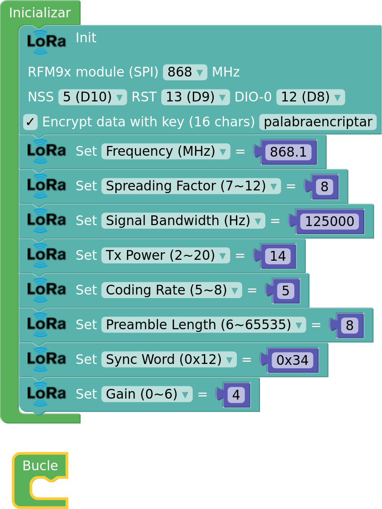
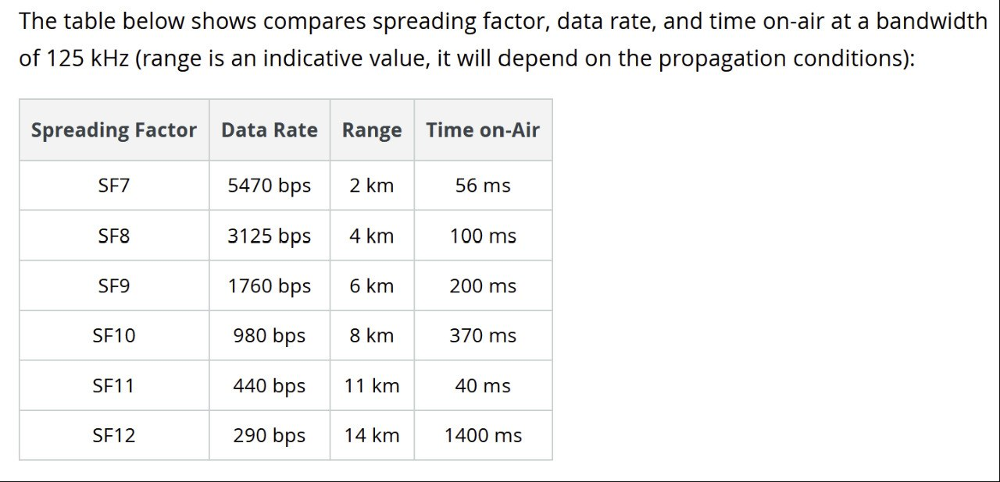

LoRa. Tipo de señal
LoRa es una tecnología de comunicación patentada, que está pensada para comunicaciones con un bajo consumo de energía, largo alcance y buena inmunidad frente al ruido, lo que la hace ideal para aplicaciones IoT.
El sistema de comunicación LoRa esta basado en la modulación CSS (Chirp Spread Spectrum), que es una técnica de modulación de banda ancha, que utiliza chirps (pitidos), para codificar la información. Los chirps son como pitidos de un tono cuya frecuencia incrementa o decrementa linealmente con el tiempo a lo largo del ancho de banda utilizado (BW), simétrico a la frecuencia central y cada chirp representa un símbolo, que puede tener 2F valores, donde F representa el Spread Factor.
En el sistema LoRa se transmiten paquetes de datos y estos paquetes de datos están formados por:
- Preámbulo (preamble), que está formado por un número de chirps variables y una palabra de sincronización (Sync Word). En recepción se comprueba si el preámbulo recibido coincide con el programado y si no coincide desecha el resto del mensaje.
- Cabecera, que puede ser explícita o implícita y en el caso de que sea explícita, contendrá información sobre el número de datos a enviar, la tasa de codificación de errores y la presencia de un código de verificación de errores.
- Carga útil, que es la información neta que se desea transmitir. En Lora el número máximo de es de 255 bytes (caracteres).
Parámetros de transmisión en LoRa P2P
Inicialización del módulo LoRa
Cuando inicializamos el módulo LoRa con el bloque de inicialización, para una frecuencia central determinada (en nuestro caso 868 MHz), nos fija una serie de parámetros por defecto, que son los siguientes:
- Frequency = 868 MHz
- TxPower =17
- SpreadingFactor= 7
- Bandwith= 125000 Hz
- CodingRate= 5
- PreambleLength= 8
- SyncWord= 0x12
- Gain = 0 (auto)
- EnableCRC= disable
En el programa podemos modificar cualquiera de estos parámetros con los siguientes bloques de steamakersblocks relacionados con la modificación de nuestra transmisión LoRa:

TX Power
Define la potencia de la transmisión de decibelios (dB) de nuestro dispositivo LoRa. Le podemos dar valores entre 2 y 20 decibelios (dB), por defecto 17 dB.
Frequency. Frecuencia (portadora)
Define la frecuencia portadora del medio utilizado tanto para las operaciones de transmisión como para las de escucha. También depende de la región operativa: en Europa, la frecuencia portadora operativa de LoRa es la banda ISM de la UE 863-870MHz. En nuestro caso por defecto 868 MHz. Podemos cambiar a valores no enteros como en el ejemplo de configuración de la imagen.
Ancho de banda (BandWidth)
Representa el ancho de las señales de radiofrecuencia LoRa, es en realidad un rango de frecuencia que oscila respecto a la frecuencia base dónde se concentra la mayor potencia de la señal, que se usa para la transmisión de datos. Por lo general, se establece en 125 kHz, pero se puede aumentar hasta 250 kHz o incluso 500 kHz en algunas regiones para parámetros de modulación particulares.
Un ancho de banda más alto proporciona una velocidad de datos más alta (por tanto, un tiempo más corto en el aire), pero una sensibilidad más baja (debido a la integración de ruido adicional).
Un ancho de banda más bajo proporciona una sensibilidad más alta, pero una velocidad de datos más baja.
En ancho de banda por defecto es de 125 KHz, pero se le pueden dar el siguiente rango de valores: 7.8 KHz, 10.4 KHz, 15.6 KHz, 20.8 KHz, 31.25 KHz, 41.7 KHz, 62.5 KHz, 125 KHz, 250 KHz, y 500 KHz.
Spreading Factor (SF), factor de propagación o factor de ensanchamiento
Representa el parámetro de propagación del chirp*, que define cuántos chirps se envían por segundo. Toma un valor por defecto de 7, pero se le pueden dar un rango de valores entre 6 y 12. En detalle, un SF grande aumenta el tiempo en el aire del símbolo (dato a transmitir) y el consumo de energía, mejorando así el rango de comunicación, pero reduciendo la velocidad de datos disponible y el tamaño de la carga útil de los mensajes.
Cada aumento en el factor de ensanchamiento (SF) reduce a la mitad la velocidad de transmisión y, por lo tanto, duplica la duración de la transmisión y, en última instancia, el consumo de energía.
A menos SF más velocidad de transmisión de datos y menos alcance, a más SF menos velocidad de transmisión de datos y más alcance. El alcance también depende en gran medida del entorno y las posibles construcciones u obstáculos que se encuentren a su paso.
* (chirp): son pulsos de frecuencia (ascendente o descendente), la secuencia de los mismos se usan para enviar símbolos (datos).

Coding Rate o razón de código:
Es la razón (cociente) de Forward Error Correction (FEC) usada por LoRa. FEC es el proceso donde son añadidos bits de corrección de error a los datos trasmitidos. La Razón de Código se refiere a la proporción de bits transmitidos que realmente llevan información con respecto a los totales. LoRa permite los siguientes valores , los cuales son calculados de la siguiente manera:
donde
Toma un valor por defecto de 5, pero se le pueden dar un rango de valores entre 5 y 8.
Preamble Length
Son un numero de símbolos que se envían al principio de cada información enviada en LoRa, su valor por defecto son 8, pero se les puede dar un rango entre 6 y 65535 símbolos.
Sync word
Establece la palabra de sincronismo de la comunicación de radio LoRa. Es un byte en hexadecimal cuyo valor por defecto es 0x12, y puede tomar un rango de valores entre 0 y 0xFF.
Gain
Configura la ganancia de LNA para obtener una mejor sensibilidad de RX; de forma predeterminada, se usa AGC (control automático de ganancia) y no se usa la ganancia de LNA.
Valores de 0 (ganancia automática) hasta el 6. Por defecto 0.
CRC
La verificación por redundancia cíclica (CRC) es un código de detección de errores usado frecuentemente en redes digitales y en dispositivos de almacenamiento para detectar cambios accidentales en los datos. Comprueba aritméticamente que los datos recibidos concuerdan con los enviados. El CRC está por defecto deshabilitado y se puede habilitar o no.
Comunicación efectiva entre dispositivos LoRa
Para que una comunicación pueda establecerse punto a punto entre dos dispositivos LoRa se debe cumplir todos estos requisitos:
- Que trabajen con los mismos valores simultáneamente de:
- Frecuencia.
- Ancho de banda.
- Coding Rate.
- Spreading Factor.
- Preamble Length.
- Sync Word.
- CRC lo tengan igual (activado o desactivado)
- Si la información está encriptada, misma palabra de encriptación.